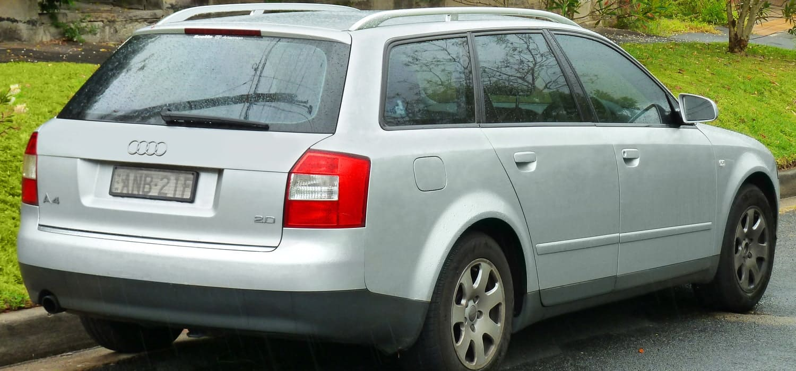
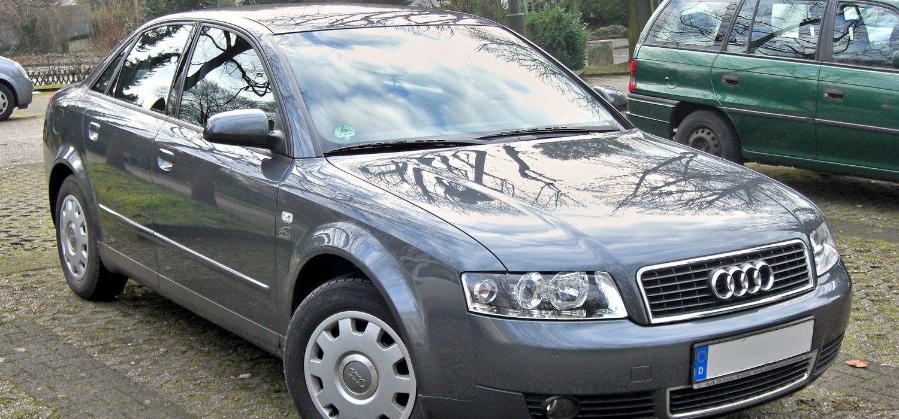

Historia modelu od 1994 roku do dzisiaj.
Audi A4 II zostało zaprezentowane po raz pierwszy w 2000 roku. Pojazd oznaczony kodem fabrycznym B6 oparto na nowej płycie podłogowej PL46. Oprócz karoserii powiększono także o kilka centymetrów wnętrze, poprawiono właściwości jezdne i komfort dzięki zastosowaniu nowego zawieszenia wykonanego z aluminium. W składzie wyposażenia seryjnego znajdowały się m.in. ESP, wspomaganie hamulców i boczne poduszki powietrzne. W 2001 roku wprowadzono na rynek nową wersję Avant, a w 2002 roku wprowadzono Audi A4 z silnikami FSI oraz wersję kabriolet z automatycznie składanym, płóciennym dachem, która zastąpiła Audi Cabriolet. Zaoferowano także nową wersję S4 z silnikiem V8 o mocy 344 KM. Nowością było wprowadzenie bezstopniowej skrzyni biegów Multitronic dostarczonej przez zakłady LuK, która zastąpiła skrzynie Tiptronic w modelach z napędem na przednią oś.
 Segment:
D
Typy nadwozia:
4-drzwiowy sedan
5-drzwiowe kombi
2-drzwiowe cabrio
Skrzynia biegów:
5 i 6-biegowa manualna
5 i 6-biegowa automatyczna
Napęd:
przedni
quattro
Długość:
sedan: 4547 mm
kombi: 4544 mm
cabrio: 4573 mm
Szerokość:
sedan/kombi: 1766 mm
cabrio: 1777 mm
Wysokość:
sedan/kombi: 1428 mm
cabrio: 1391 mm
Rozstaw osi:
sedan: 2650 mm
cabrio: 2654 mm
Masa własna:
1295 – 1590 kg
Zbiornik paliwa:
70 l
Liczba miejsc:
5
Test Euro NCAP:
4 gwiazdki
Bagażnik:
sedan: 445 l
kombi: 442 – 1184 l